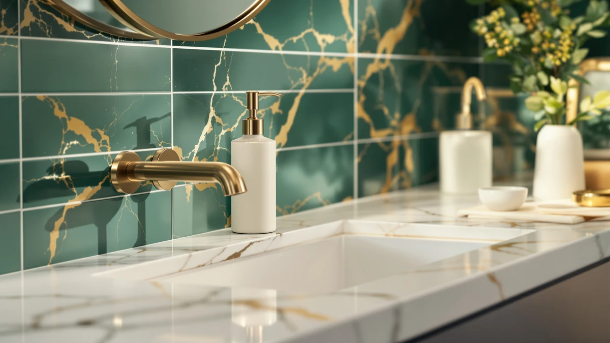

What to Put Under Soap Dispenser: Complete Guide (2026)
Prices and picks verified as of September 2026. Independent, reader-supported reviews.


Things to Know Before You Buy
- Material matters more than looks. A tray under a soap dispenser needs to handle standing water and soap residue without staining or warping. Ceramic, silicone, and sealed cork hold up longer than unsealed wood or fabric coasters.
- Size should clear the base by half an inch. A tray or mat cut to match the dispenser's exact footprint still lets drips run past the edge and onto your counter.
- Non-slip backing prevents tipping. A dispenser sitting on a smooth tray without rubber feet or a textured base can slide when you press it one-handed, especially on marble or glass counters.
- Drainage design avoids standing water. Trays with a raised lip or small ridges keep soap residue from pooling directly under the pump base, which cuts down on mold and ring stains.
- Cost stays low regardless of counter type. Most options that answer what to put under a soap dispenser cost under $15, so material and drainage matter more than price when you choose.
The simplest answer to what to put under soap dispenser bottles is a small waterproof tray, coaster, or mat that catches drips before they reach your counter. Ceramic trays, silicone mats, and sealed cork coasters all work, and the right pick depends on your counter material, how often you refill the dispenser, and whether you want something that blends in or stands out.
We compared trays, mats, and coasters marketed for sinks and counters, along with the drainage and non-slip features built into the soap dispensers people pair with them, to identify what actually stops water rings and soap film. Owner reviews and product specs, not marketing copy, drove these picks.
Counter material, tray size, and how often you refill the dispenser decide which type works best for you, and a few mistakes below still lead to ring stains and mold even when people do use a tray. If you're also shopping for a new dispenser to go with it, the picks further down cover a range of budgets and styles.
What You Need to Know
What to put under a soap dispenser depends on the problem you're trying to solve. If your counter is granite, marble, or another porous stone, the priority is blocking moisture before it seeps into the surface and leaves a permanent ring. If your counter is laminate or tile, staining is less of a concern, and the bigger issue is soap film building up in a spot you wipe daily.
A dispenser without a base tray loses a small amount of soap and water with every pump, and that runoff collects wherever the bottle sits. Over weeks, it hardens into a sticky film that attracts dust and grime, and on stone counters it can etch or discolor the surface permanently. A catch tray solves this by giving that runoff somewhere to collect that isn't your countertop.
Refill frequency matters too. A dispenser you refill every one to two weeks gets removed and replaced often enough that a lightweight coaster works fine. A dispenser you rarely touch, because it holds a large reservoir, sits in one place for months, and a heavier tray with raised edges does a better job containing drips over that stretch of time.
Bathroom and kitchen sinks see different traffic. A kitchen dispenser near the sink deals with splashback from dishwashing in addition to its own drips, so a wider tray with some depth handles that better than a flat coaster sized for a bathroom vanity.
Types and Categories
Ceramic and stoneware trays are the most common option, and for good reason. They're heavy enough to keep a dispenser from sliding, they don't absorb water, and they wipe clean with a damp cloth in seconds. The tradeoff is that a ceramic tray can chip if dropped, and glazed finishes get slippery when wet, so look for one with a textured or unglazed base.
Silicone mats and trays cost less and flex to catch drips along raised edges instead of a flat surface. They resist mold better than fabric, and most are dishwasher safe, but a lightweight silicone mat can slide on a smooth counter unless it has a suction or textured underside.
Cork coasters and trays bring a warmer look than ceramic or silicone, and cork naturally resists mildew. The catch is that unsealed cork absorbs water over time and eventually swells or stains, so any cork option under a soap dispenser needs a waterproof coating rather than raw, unfinished cork.
Stainless steel trays hold up to daily splashing without staining or cracking, and they suit a kitchen sink area where a dispenser sits next to a dish soap bottle. They run louder than ceramic or silicone when you set a bottle down, and fingerprints show more on a brushed steel finish than on a matte tray.
Multi-purpose sink caddies, built to hold a sponge and dish soap together, double as what to put under a soap dispenser in a kitchen, since most already include a built-in drain tray.
How to Choose
Deciding what to put under a soap dispenser starts with your counter material. Granite, marble, and other natural stone counters are porous and stain permanently if water sits on them, so prioritize a tray with a raised lip that fully contains drips rather than a flat coaster that lets a little runoff escape at the edges. Laminate, quartz, and tile counters are sealed and non-porous, so a simple flat mat prevents daily wiping without any risk of long-term staining.
Match the tray size to your dispenser's footprint plus some margin. A tray that's the exact same width as the dispenser base still lets soap run down the side and drip past the edge when you press the pump at an angle. Look for a tray that clears the base by at least half an inch on every side.
Check for a non-slip bottom before you buy. A tray sitting on a wet counter can slide when you press the pump, especially on glass or polished stone, and a dispenser that tips over creates a bigger mess than the drips it was meant to catch. Rubber feet, a suction base, or a textured underside all solve this.
Consider how often you'll clean it. A tray with a smooth, single-piece design wipes clean in seconds, while one with ridges, grooves, or a separate drain insert traps residue in the crevices and takes longer to maintain. If you don't want another surface to scrub weekly, a flat or gently curved tray beats an elaborate drainage design.
Weigh looks against function only after you've checked the practical boxes. A tray that matches your dispenser or counter color makes the setup look intentional instead of like an afterthought, but a good-looking tray that holds standing water or slides around solves nothing.
Common Mistakes to Avoid
The most common mistake is skipping a tray altogether and assuming an occasional wipe is enough. Soap residue builds up faster than most people expect, and by the time a ring or film is visible, it has already had days to set into the counter's finish.
Choosing an absorbent material is the second mistake. Fabric coasters, unsealed wood, and raw cork all soak up water and soap instead of containing it, and a damp tray sitting against your counter for hours can do more harm than no tray at all, since trapped moisture underneath encourages mold in a spot you can't see.
Undersizing the tray is another frequent error. A coaster cut to match the dispenser's exact base looks tidy but misses drips that run down the side of the bottle, which is the whole reason for using a tray in the first place.
Skipping the non-slip check causes tipping accidents, particularly with tall dispensers that carry a high center of gravity. A dispenser that falls over on a hard tray can crack, and the spill takes longer to clean than the drips the tray was supposed to prevent.
Finally, people forget to empty and dry the tray periodically. Even a well-chosen tray needs occasional draining, since standing water left for days breeds bacteria and mold regardless of the material it sits on.
Care and Maintenance
Wipe the tray daily if it sits in a high-traffic kitchen or bathroom, and weekly if it's in a guest bathroom that sees less use. A damp cloth with a drop of dish soap removes most residue before it hardens into a film that needs scrubbing.
For ceramic or stainless steel trays, a soft sponge and warm water handle routine cleaning, and both materials tolerate an occasional soak in a mild vinegar solution to dissolve mineral buildup from hard water. Avoid abrasive scrubbers on glazed ceramic, since they dull the finish over time and make future spills harder to wipe clean.
Silicone trays go straight into the dishwasher's top rack for a deeper clean every few weeks, which also helps with any mildew smell that builds up in humid bathrooms. Let the tray air dry fully before setting the dispenser back on it, since trapping moisture between a wet tray and a wet dispenser base defeats the purpose of using one.
Sealed cork or wood trays need the gentlest care: wipe them dry immediately after any spill and reapply a waterproofing sealant every six to twelve months if the manufacturer recommends it. Skipping that resealing is how a good-looking cork tray ends up warped within a year.
Whatever material you land on, dry the counter underneath during a deeper weekly clean instead of wiping around the tray, since that spot is the one most people miss.
Our Top Picks
If you're shopping for a new dispenser to sit on that tray, these three balance price, material, and daily usability across different budgets.

Editor's Pick
Dinosaur Automatic Soap Dispenser Auto
The touchless sensor keeps hands off the pump entirely, which cuts down on the smudges and soap buildup a tray has to catch in the first place.
$23.66
Check Price on Amazon
Best Value
FE Soap Dispenser 300ml/10oz Ceramic
A 300ml ceramic reservoir at under $21 comes with a weighted, water-resistant base built in, so a separate tray becomes optional rather than necessary.
$20.99
Check Price on Amazon
Premium Choice
INGOFIN Ceramic Lotion Dispenser -
The glazed ceramic finish resists the etching that plagues cheaper dispensers left on stone counters, making it the safer premium pick for marble or granite.
$17.99
Check Price on AmazonWhat to put under soap dispenser bottles on granite or marble counters?
Use a tray with a raised lip rather than a flat coaster, since granite and marble are porous stone and stain permanently if water sits on the surface for more than a few hours.
Can you use a regular coaster instead of a dedicated tray?
A drink coaster works in a pinch, but most are sized and sealed for cold glasses, not standing soap and water.
Frequently Asked Questions
What to put under soap dispenser bottles on granite or marble counters?
Use a tray with a raised lip rather than a flat coaster, since granite and marble are porous stone and stain permanently if water sits on the surface for more than a few hours. Ceramic and sealed stainless steel trays contain drips best on stone counters.
Can you use a regular coaster instead of a dedicated tray?
A drink coaster works in a pinch, but most are sized and sealed for cold glasses, not standing soap and water. A coaster made from absorbent material like unfinished cork or fabric soaks up residue instead of containing it, so it's worth swapping for a waterproof option sized to clear the dispenser's base.
How often should you clean the tray under a soap dispenser?
Wipe it daily in a busy kitchen or main bathroom, and weekly in a guest bathroom with lighter use. Letting soap film sit for more than a few days makes it harder to remove and raises the odds of mold forming underneath the dispenser.
Does a soap dispenser tray actually prevent mold?
It reduces the risk significantly by keeping standing water off your counter, but only if you empty and dry the tray periodically. A tray you never empty relocates the standing water problem instead of solving it.
What's the best material for a soap dispenser tray in a kitchen?
Stainless steel and ceramic hold up best to daily splashing near a kitchen sink, since neither absorbs water or stains from dish soap residue. Silicone is a close second and costs less, though it shows scratches sooner than steel or ceramic.
Verdict
What to put under a soap dispenser comes down to matching the tray's material and size to your counter and how often you refill the bottle. A waterproof tray with a slight lip, sized to clear the dispenser's base by half an inch, solves the problem for almost any counter type, and ceramic or stainless steel outlasts fabric or unsealed wood in daily use.
If you're also replacing the dispenser itself, the beslowly Dinosaur Automatic Soap Dispenser is worth pairing with whatever tray you choose, since its touchless sensor already cuts down on the drips and hand contact that make a tray necessary in the first place. Its non-slip base and sealed reservoir mean less runoff to manage day to day, whether it sits on stone, laminate, or tile.
Whatever combination you land on, the small upfront cost of a tray or a well-designed dispenser saves you from scrubbing rings out of a counter later, and that tradeoff is worth making before the first stain shows up.